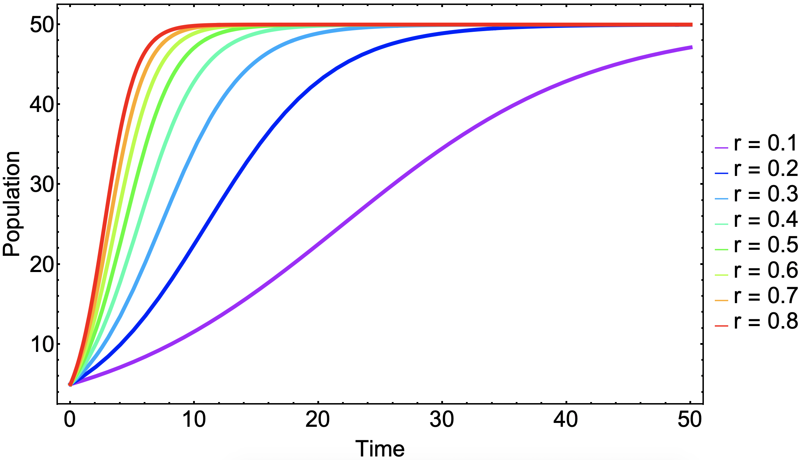
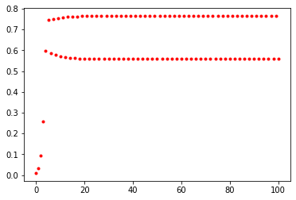

Logistic Growth Model
Logistic Growth Model
The simple difference equation below will show exponential growth behavior:
$$x_t = a x_{t-1}$$
However, it is often the case that a population cannot grow indefinitely but rather reach a population limit. This limit is called the population’s carrying capacity. To create a model with exponential growth but also incorporate this convergence to a population maximum limit, we may start with the following train of thought:
$$x_t = f(x_{t-1}) x_{t-1}$$
The constraints that $f(x_{t-1})$ has to satisfy is that it must pass through the points $(x, f(x)) = (0,a) $ and $(K, 1)$, where $K$ is a constant that represents the carrying capacity of the population. The simplest model would be a straight line using these two points:
$$f(x) = -\frac{a-1}{K}x+a$$
We may now use this growth ratio function to put back into our difference equation:
$$x_t = \left(-\frac{a-1}{K}x_{t-1}+a\right) x_{t-1}$$
This is generally called the \emph{logistic growth model} written in terms of a difference equation and may be further simplified: $$x_t = \left( - \frac{a-1}{K} x_{t-1} + a \right) x_{t-1} = x_{t-1} + r x_{t-1}\left( 1 - \frac{x_{t-1}}{K} \right)$$
where $r = a -1 $.
The logistic growth model for varying growth ratios in shown below.

This may also be written in terms of a differential equation for the continuous version of this model:
$$\frac{d x(t)}{d t} = r x(t) \left( 1 - \frac{x(t)}{K}\right)$$
Preamble
from pylab import *
Defining Logistic Map
def f(x, r):
return r*x*(1-x)
Period Doubling Bifurcation $(r = 3.1)$
x = 0.01
r = 3.1
xdata = [x]
for t in range(100):
x = f(x, r)
xdata.append(x)
plot(xdata, 'r.');

Creating Bifurcation Diagram
rvalues = []
xvalues = []
for r in linspace(2.5, 3.7, 500):
x = 0.01
for t in range(200):
x = f(x, r)
if t > 100:
rvalues.append(r)
xvalues.append(x)
plot(rvalues, xvalues, 'r.', alpha = 0.05);